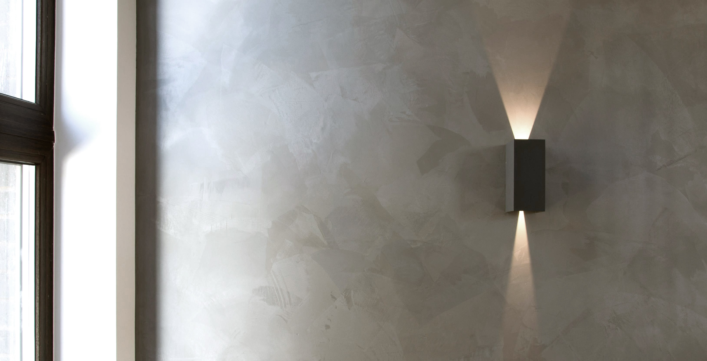
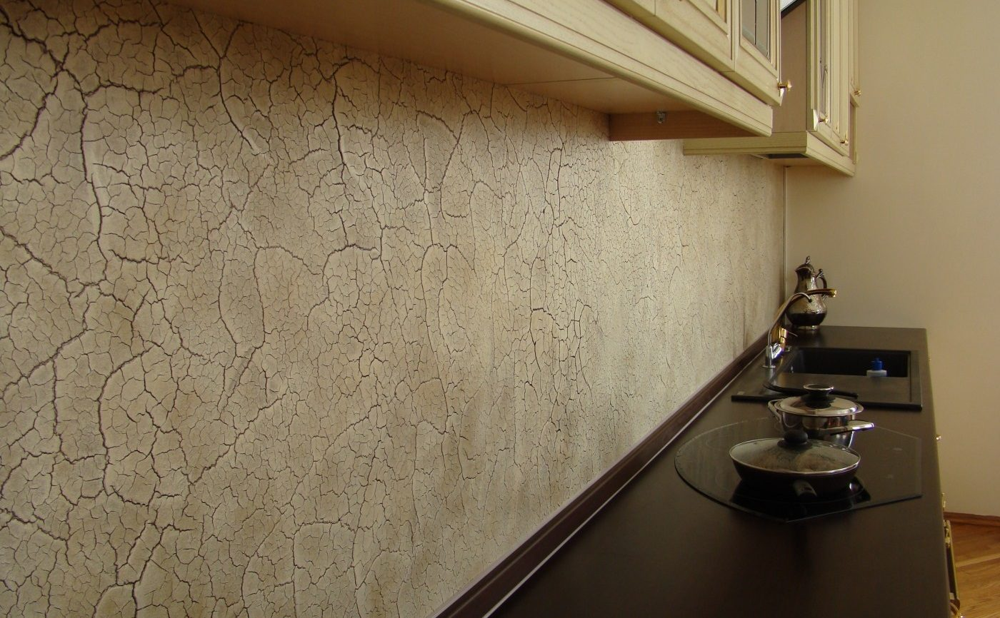

Покрытие стен декоративной штукатуркой – популярное направление в оформлении интерьера. Разнообразие материалов и расцветок позволяет подобрать идеальный вариант и продемонстрировать вкус и стиль владельца помещения.
Виды декоративной штукатурки
Три основных направления данного покрытия для стен:
- гладкая, или тонкослойная штукатурка;
- фактурная;
- мультиколорная.
Гладкое покрытие обычно наносится в один прием. Этот вид штукатурки может придать обычной стене старинный вид или воссоздать ткань, кожу, кору дерева, облака, абстрактный рисунок.

При нанесении фактурной разновидности покрытие получается объемным: эффект мрамора, камня, крокодиловой или змеиной кожи.

Мультиколорная декоративная штукатурка – это взвесь чешуек высохших акриловых красок. Образует структурное разноцветное покрытие.
Декоративные штукатурки различаются не только по составу, но и по способу нанесения. Известковая штукатурка, к примеру, наносится в полупластичном или свежем состоянии. А вот каменная штукатурка требует специального подхода: сначала материал застывает, затем обрабатывается особыми зубилами.
Преимущества использования декоративной штукатурки в интерьере
Современный материал отлично заменяет собой обои и краску, обладая при этом массой преимуществ.
- Безопасность.
Декоративные штукатурки любого типа не содержат никаких токсичных веществ. Каменные штукатурки экологически безопасны. Качественное покрытие позволяет стенам «дышать» и является безвредным для человека.
- Удобство в эксплуатации.
В отличие от обоев, которые при попадании грязи приходится переклеивать, стена с таким покрытием легко и просто отмывается. Штукатурка не исчезнет, не сотрется и не сползет.
- Надежность.
Покрытие декоративной штукатуркой обладает водостойкостью и прочностью.
- Универсальность.
Такое покрытие подходит для стен любой комнаты, а также для отделки наружной части дома. Стены с дефектами – не преграда для нанесения декоративной штукатурки.
- Долговечность.
Состав декоративной штукатурки очень прост, при этом покрытие будет радовать владельцев помещения своими красотой и прочностью долгие годы.
Можно ли обработать стены декоративной штукатуркой самостоятельно?
Популярность декоративных штукатурок способствовала появлению в интернете множества инструкций, описаний и видеороликов о том, как нанести покрытие. Однако эти подсказки для человека неопытного практически бесполезны:
- создать идеальную поверхность можно только предварительно набив руку, в противном случае результат получится совсем не таким, как ожидалось;
- работать с разными декоративными материалами сложно, ведь каждый из них наносится особым способом и в процессе необходимо учитывать множество нюансов;
- достичь красивого и необычного эффекта на стене, не имея опыта работы с декоративной штукатуркой, получится далеко не с первого раза, при этом риск испортить и стену, и материал, весьма высок.
Чтобы получить качественную работу по нанесению штукатурки, лучше всего заказать услуги проверенной компании.
Профессиональные работники, оказывающие услуги штукатура, владеют всеми разновидностями технологии нанесения покрытия:
- рельефная отделка;
- фактурная отделка;
- штриховка специальной щеткой;
- создание рельефа валиком;
- венецианская штукатурка с мраморной крошкой;
- сграффито;
- художественная роспись;
- лепка и другой декор.
Перед началом работ можно выбрать материал в магазине или на сайте компании и при необходимости заказать декоративную штукатурку с доставкой. Наша компания предлагает широкий ассортимент товара данной категории: на выбор клиента имеется множество разновидностей штукатурки от самой дорогой и красивой до более простой и лаконичной.
Квалифицированные мастера выполнят весь спектр работ, начиная с подготовки поверхности и заканчивая выносом строительного мусора.
Наша фирма уже несколько лет успешно оказывает услуги нанесения штукатурки в Нижнем Новгороде. Для консультации или вызова мастера можно позвонить по нашему номеру телефона.